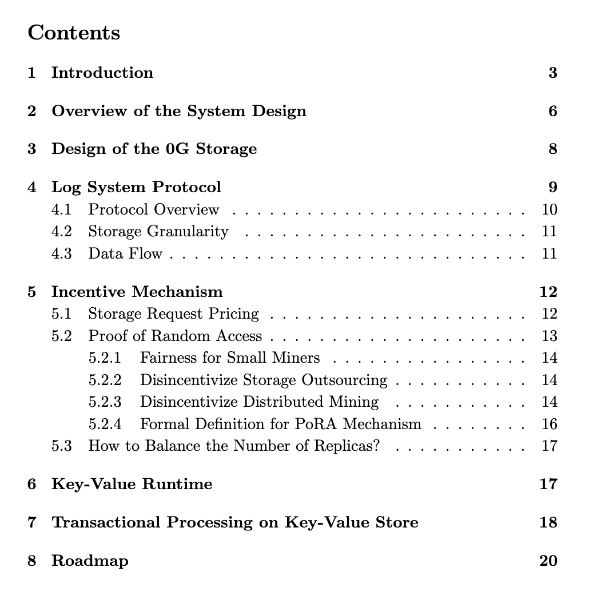
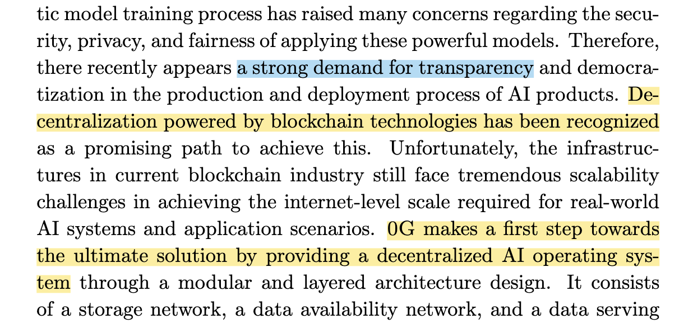
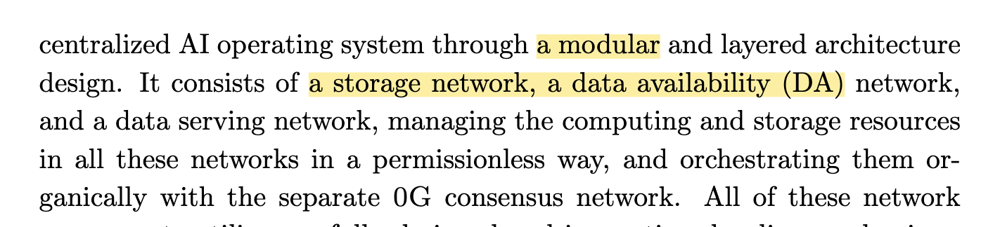
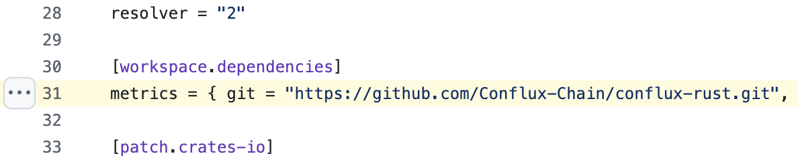
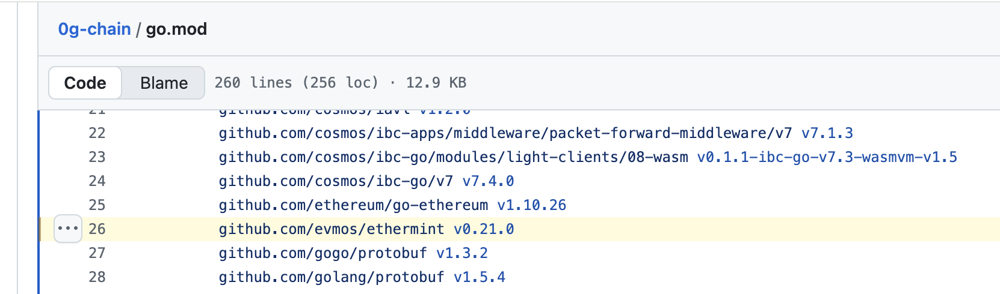
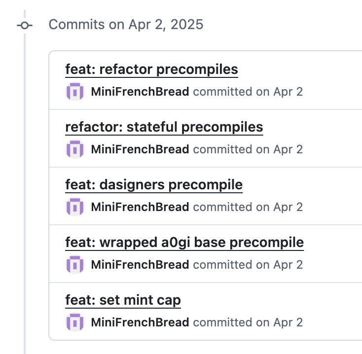

First of all, I’m not very optimistic about the technical depth of 0G, mainly because it’s a project developed by a Chinese team. 0G is positioned in the AI track, and in March it posted job openings on TinTinLand. It looks like the token launch is scheduled for around September. My guess is that the AI angle is more hype than genuine technical accumulation. Since I recently joined a TinTinLand study group, which is collaborating with 0G to launch community courses, I became slightly interested in analyzing this project.
The official website of 0G is 0g.ai. On the site, they’ve put all the buzzwords they could: “the next generation,” “decentralized AI,” “DeAIOS,” “RWA.” The bigger the words, the worse the omen usually is.
0G released its whitepaper in August 2024. Judging by its table of contents and length, things don’t look promising. The structure is fairly simple, with only 20 pages total. Length alone is a superficial metric—Bitcoin’s whitepaper was just 9 pages—but the overly simplistic structure makes it feel makeshift for a supposedly AI-driven project.
Let’s look at what the abstract says. 0G claims to address transparency issues in AI model training:
When I saw the word modular, I had a bad feeling—especially when DA appeared. I thought, could they be relying on Celestia? Combined with the claim on the homepage of 2500 TPS, what chain can really achieve that? Cosmos, maybe. But I still don’t understand the claim of 8K validators—Cosmos certainly can’t do that.
Fortunately, it’s not Celestia. While the whitepaper doesn’t go into detail about technical choices, it’s clear that 0G DA is designed as a parallel system, meaning they built their own DA chain called 0G DA.
The whitepaper does detail PoRA (Proof of Random Access), which is their mining mechanism. This part has real technical substance. Unlike Filecoin’s cold storage model, 0G Storage emphasizes instant on-chain data access. It sets an 8TB mining window, requiring miners to quickly verify data integrity within that range.
The limitation of PoRA is that while random sampling can verify whether a miner possesses complete data, it cannot prove data uniqueness. Filecoin’s PoRep solves that, but 0G Storage doesn’t attempt to. Instead, it focuses only on ensuring data availability. Its reward mechanism ensures that malicious behavior doesn’t yield extra profit, so the system works as intended. Filecoin, by contrast, ties rewards to raw storage power, facing different challenges.
The project’s first blog post gives a clearer picture: 0G has two core components, 0G Storage and 0G DA. Essentially, they are tackling the DA problem, trying to apply DA capabilities to AI scenarios. That’s why they are categorized as an AI project, though fundamentally it’s more of a distributed storage blockchain project.
Last year, 0G raised $30 million in seed funding, which shows they have significant capital backing.
On the engineering side, the 0G Storage code is based on Conflux’s node code, with additional features built on top:
I won’t dive into the PoRA implementation details here.
From the background, we’ve only mentioned 0G Storage and 0G DA. But 0G also includes two more components: 0G Chain and 0G Compute Network. These likely weren’t in the initial plan, so they’re absent from the whitepaper.
0G Chain is built with Cosmos SDK (finally, Cosmos appears), and directly uses Evmos for Ethereum smart contract compatibility:
The last code commit in the 0G Chain repo was five months ago, suggesting they may have abandoned the Cosmos SDK approach. Instead, they have a more active repo, 0g-geth, which looks like a fork of Geth with added support for 0G DA via precompiled contracts.
0G Compute Network is the part actually tied to AI model training. It already supports some pre-trained models. For users, it works similarly to OpenAI’s SDK—send a request, receive a response. Essentially, it’s a client-side SDK.
Nodes that provide compute power to 0G Compute Network are called Providers. The repo is 0g-serving-broker. It contains model training code, such as finetune.py, which fine-tunes text models using Transformers. Their Docker container is built on pytorch 2.5.1-cuda12.4-cudnn9-devel.
From an LLM training perspective, 0G does have technical content. But what they’re doing is fine-tuning, not pre-training. Fine-tuning means taking a pre-trained model and using smaller compute resources to adapt it for specific tasks. In contrast, companies like OpenAI or xAI (Grok) handle pre-training with massive datasets (e.g., 1TB tokens).
For example, if OpenAI trained and released a GPT-3 model (they didn’t actually release it), 0G Compute Network would let users fine-tune it with their own data, creating a customized GPT-3 variant. That’s the idea.
More precisely, 0G Compute Network provides the environment for fine-tuning, combined with blockchain’s economic models and reward mechanisms. Users can contribute compute power for fine-tuning and earn rewards, while others can use the fine-tuned models.
As for how Providers interact with on-chain contracts, that’s straightforward. 0G uses Solidity contracts, e.g., 0g-serving-contract. Calls follow the standard Ethereum ecosystem. What 0G adds is recording fine-tuning results, distributing training tasks, handling rewards/penalties—all encoded in contracts. Off-chain compute nodes then integrate with these contracts.
In summary, I need to revise my initial stance: 0G does have some real technical content, though more on the engineering side. Both in blockchain (DA) and AI (model fine-tuning), they’ve made solid progress, and their business logic already forms a closed loop.
That said, writing this analysis of 0G felt less straightforward than with other projects. Their whitepaper and docs are incomplete, and their technical roadmap isn’t very unified, so it’s hard to find clean, top-down explanations. Still, based on the analysis above, I think the technical picture of 0G is now clear enough.